의공기사 (2021-03-07 기출문제)
1과목: 기초의학 및 의공학
1. 포도당 바이오센서는 어떤 물리량을 측정하는 센서인가?
- pH
- 온도
- 산소농도
- 질소농도
(정답률: 75%)

2. 뼈와 뼈를 연결하는 조직은?
- 건
- 인대
- 연골
- 근육
(정답률: 78%)
3. 열전쌍의 특징 중 틀린 것은?
- 크기가 작다.
- 제작이 용이하다.
- 응답시간이 빠르다.
- 접점이 많으므로 열용량이 많다.
(정답률: 78%)
4. 전기적 흥분이 신경세포에서 신경세포로 전달되어 메커니즘과 심장세포와 심장세포 사이로 흥분이 전달될 수 있는 메커니즘을 바르게 짝지어 것은?
- synapse - synapse
- synapse - gap junction
- cable theory - starling's law
- 크리스티앙 외르스테드의 법칙 - 렌쯔의 법칙
(정답률: 84%)
5. 전해질 겔(electrolyte gel)의 역할에 대한 설명으로 틀린 것은?
- 전극과 피부간의 전기적 저항을 줄인다.
- 피부 각질층의 전기 전도도를 증가시킨다.
- 전극과 피부사이에 절연층을 만든다.
- 전극과 피부간의 전기적 접촉 상태를 좋게 유지한다.
(정답률: 91%)
6. 정상인의 척수신경(spinal nerve)의 구성으로 틀린 것은?
- 목신경 3쌍
- 가슴신경 12쌍
- 엉치신경 5쌍
- 꼬리신경 1쌍
(정답률: 67%)
7. 초음파 영상장치에서 초음파를 혈관 내에 투과시켰을 때 혈구세포에 반사되어 돌아오는 초음파의 주파수 변화를 측정하여 혈류의 속도를 측정하는데 이때 사용되는 효과는?
- 홀 효과
- 광전 효과
- 도플러 효과
- 전계 효과
(정답률: 93%)
8. 실무율에 대한 설명 중 틀린 것은?
- 실무율은 신경세포에서만 일어난다.
- 단일 세포에서 관찰되는 성질이다.
- 단일 신경섬유가 자극의 정도에 따라 최고의 흥분을 하거나 흥분을 하지 않는 현상을 말한다.
- 신경에 자극을 가할 때 역치 이상일 때는 반을을 일으키고, 역치 이하일 때는 활동 전압은 발생되지 않으나 다만 흥분성의 변화만이 있는 것을 실무율이라고 한다.
(정답률: 82%)
9. 분극전극에 대한 설명 중 틀린 것은?
- 동잡음이 크다.
- 용량성 특성을 보인다.
- 장기간 사용이 가능하다.
- 아주 낮은 저주파 신호에 사용하면 좋다.
(정답률: 64%)
10. 휴지기 전위를 조정하는 메커니즘이 아닌 것은?
- 삼투 현상에 의해 이온을 이동시켜 준다.
- 안정상태의 세포막은 Na+ 이온보다 K+이온을 더 잘 통과시킨다.
- 크기가 큰 음전하의 단백질은 세포막을 통과할 수 없다.
- Na+/K+ 펌프는 Na+ 이온 3개를 세포막 밖으로 내보내고 K+ 이온 2개를 들여온다.
(정답률: 70%)
11. 전극을 이용한 측정에서 발생하는 잡음의 종류 및 원인에 대한 설명으로 틀린 것은?
- 동잡음 : 전자기파의 간섭
- 증폭기 출력신호 포화 : 전극 리드선의 단선, 전극의 전해질 건조
- 전원 잡음 : 공통전극의 접촉 불량 또는 단선, 리드선의 외부기기 접족
- 백색 잡음 : 전극의 전해질 건조, 리드 선커넥터 부분의 연결불량
(정답률: 79%)
12. 선형가변자동변환기가 다른 유도성 센서에 비해 갖는 가장 큰 장점으로 옳은 것은?
- 낮은 민감도
- 한정된 크기와 모양
- 간단한 신호처리 과정
- 넓은 주파수 대역에서의 선형성
(정답률: 87%)
13. 흡착전극(Suction electrode)에 대한 설명으로 옳은 것은?
- 장시간 사용에 적합하며, 주로 근전도 측정에 사용된다.
- 전극을 피부에 고정하기 위한 접착밴드가 꼭 필요한 전극이다.
- 움직임에 의한 동적잡음이 작아 소야용으로 가장 많이 사용된다.
- 속이 빈 금속 실린더 전극으로, 고무구(rubber bulb)가 전극 뒤편에 붙어 있어 고무공을 압박한 상태에서 체표면에 붙이고 음압으로 체표면에 접촉한다.
(정답률: 84%)
14. 가동성 관절의 종류에 대한 설명으로 옳은 것은?
- 평면관절 : 두 관절면이 평면이고 좁은 관절낭과 강한 인대로 싸여 있어 운동이 매우 제한된 관절이다.
- 접번관절 : 관절머리 쪽은 공 모양이고 오목하고 깊어 운동성이 가장 큰 관절로 무한하며 다양한 펑면에서의 움직임이 가능하다.
- 차축관절 : 관절머리 쪽이 타원형이며 장·단축의 운동을 하는 2축성 관절로 움직임은 가능하나 회전은 불가능하다.
- 과상관절 : 두 관절면이 말 안장 모앙처럼 생긴 것으로 서로 직각 방향으로 움직이는 2축성관절 이다.
(정답률: 84%)
15. 단일 심근의 전도 순서가 옳은 것은?
- AV node → 심방 → 심실 → SA node → purkiηje fiber → transition cell
- SA node → 심방 → AV node → purkinje fiber → 심실전체 → gap junction
- SA node → 심방 → AV node → HIS bundle → purkinje fiber → 심실전체
- AV node → 심방 → SA node → gap junction → purkinje fiber → 심실전체
(정답률: 82%)
16. 영양소로부터 에너지를 추출하는 기능을 하는 세포 소기관은?
- 골지체
- 소포체
- 리보솜
- 미토콘드리아
(정답률: 81%)
17. 뼈의 형태와 뼈의 종류의 나열이 틀린 것은?
- 장골 - 비골
- 단골 - 상완골
- 편평골 - 두개골
- 불규칙골 - 척추
(정답률: 55%)
18. 인체의 곡면에 접촉성을 높이고 움직임의 영향을 줄이기 위해, 휘어지기 쉽도록 얇은 판 또는 막 형태로 제작된 전극은?
- 흡착전극
- 미세전극
- 감홍전극
- 가요성전극
(정답률: 83%)
19. 다음 그림은 일회용 금속판 전극의 단면을 나타낸 것이다. 그림에서 전해질 겔(electrolyte gel)은 어느 부분인가?
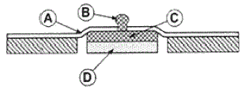
- A 부분
- B 부분
- C 부분
- D 부분
(정답률: 91%)
20. 압전소자에 전압을 가하면 변형이 생기는 현상을 이용한 장치로 틀린 것은?
- 초음파 쇄석기
- 근전도 측정장치
- 도플러 혈류측정기
- 진단용 초음파 영상기기
(정답률: 66%)
2과목: 의용전자공학
21. 심전도 측정 시 주의사항이 아닌 것은?
- 교류 장애
- 근전도의 혼입
- 검사실 청결상태
- 기저선의 호흡성 변동
(정답률: 90%)
22. 단위 정전하가 회로의 두 점간을 이동할 때 얻거나 또는 잃는 에너지를 두 점 사이의 무엇이라 정의하는가?
- 전류
- 전압
- 전하
- 저항
(정답률: 75%)
23. 유전체내에서 전속밀도의 시간적 변화에 의하여 발생하는 전류는?
- 정상전류
- 전도전류
- 변위전류
- 와전류
(정답률: 84%)
24. 8421 BCD 코드 ‘0001 1000 0111 0001’을 십진수로 표현하면 얼마인가?
- 1871(10)
- 1131(10)
- 1431(10)
- 8432(10)
(정답률: 78%)
25. 이상형 RC 발진기의 입 · 출력 위상차는?
- 45°
- 90°
- 180°
- 270°
(정답률: 78%)
26. 생체시스템의 특성으로 틀린 것은?
- 측정데이터의 수치화 및 정보화가 쉽다.
- 생체시스템은 고유의 가변적 특성을 갖는다.
- 측정대상이 대부분 신체 내부의 현상들이다.
- 생체시스템은 이물질에 대한 외부반응이 있다.
(정답률: 80%)
27. CPU를 주변장치와 연결하고 데이터 신호를 받아들이거나 제어신호를 출력하는 인터페이스 장치는?
- ALU
- I/O 포트
- 레지스터
- 보조기억장치
(정답률: 88%)
28. 호흡기의 기능평가법 중 측정이 필요한 생체변수가 아닌 것은?
- 기체압력
- 혈류속도
- 기체농도
- 폐적(부피)
(정답률: 78%)
29. 참값과 측정된 값과의 차이를 참값으로 나눈 것으로 보통 퍼센트(%)로 표현하는 것은?
- 선택도
- 정확도
- 정밀도
- 해상도
(정답률: 87%)
30. 생체 신호의 측정대상 따른 계측 방법 중 신체표면에 센서를 부착하여 측정하는 방식은?
- 외부 측정
- 표면 측정
- 침습적 측정
- 샘플 측정
(정답률: 90%)
31. 진성 반도체에 전도율을 변화시키기 위하여 불순물을 첨가하는 과정을 무엇이라 하는가?
- 도핑
- 확산
- 에칭
- 접합
(정답률: 85%)
32. 생체신호 측정전극으로 사용하는 금속전극의 대표적인 재질은?
- 납(bB)
- 구리(Cu)
- 알루미늄(Al)
- 은-염화은(Ag-AgCl)
(정답률: 85%)
33. 전계내 임의의 각 점에 있어서 그 접선 방향이 그 점에서의 전계 방향과 일치하는 선을 전기력선이라 한다. 이 때 진공중에 놓인 반경 r(m)인 구전도체를 통과하는 전체 전기력선의 수(N)는?
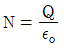
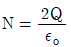
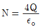
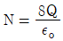
(정답률: 65%)
34. 입력저항은 높고, 출력저항은 낮으며, 최대 전압이득이 약 1인 소신호 증폭기는?
- 공통 이미터 증폭기
- 공통 컬렉터 증폭기
- 공통 베이스 증폭기
- 비반전 증폭기
(정답률: 48%)
35. 초기상태로 복원하는 과정에서 전기신호를 사용하여 데이터를 지우는 것은?
- EEPROM
- EPROM
- PROM
- Mask ROM
(정답률: 70%)
36. 다음 회로의 기능은?
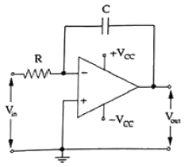
- 적분기
- 미분기
- 가산기
- 차동 증폭기
(정답률: 66%)
37. 진공 중의 평행판 콘덴서에서 면적 10m2이고 극간 거리가 10m일 때 정전용량은 몇 F인가? (단, 진공중의 유전율 ɛo=8.854×10-12F/m이다.)
- 8.854×10-10
- 8.854×10-11
- 8.854×10-12
- 8.854×10-13
(정답률: 60%)
38. 다음 회로를 A와B 단자에서 본 테브난(Thevenin) 등가회로로 옳은 것은?
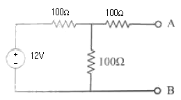
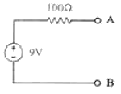
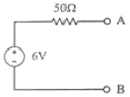
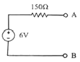
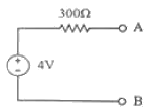
(정답률: 80%)
39. 수정에 기계적인 충격을 가했을 때 수정 양단에 전압이 발생하는 효과는?
- 압전
- 지벡
- 이온화
- 에벨렌치
(정답률: 75%)
40. 생체전기신호에 해당되지 않는 것은?
- 심전도
- 뇌전도
- 심음도
- 안구전도
(정답률: 82%)
3과목: 의료안전·법규 및 정보
41. 환자를 중심으로 2.5m의 범위 내에 있는 침대 및 모든 장치를 같은 전위상태로 만드는 접지시스템은?
- 보호접지시스템
- 등전위접지시스템
- 바닥도전접지시스템
- 잡음방지용접접지시스템
(정답률: 87%)
42. 의료기기의 전기 · 기계적 안전에 관한 공통기준 및 시험방법에서 “열적안정”에 대한 설명으로 옳은 것은?
- 물체의 온도가 1분동안 10℃이상 상승되지 않는 상태
- 물제의 온도가 1시간 동안 10℃ 이상 상승되지 않는 상태
- 물체의 온도가 1분 동안 2℃이상 상승되지 않는 상태
- 물체의 온도가 1시간 동안 2℃이상되지 않는 상태
(정답률: 79%)
43. 의료정보학의 분류체계에서 환자기록을 추출해 내기 위한 원형적인 코드체계이며, 약 10년마다 개정안이 나오고 WHO에서 관리하는 것은?
- ICD
- RCC
- MeSH
- SNOMED
(정답률: 73%)
44. 의료정보학의 코드 분류 가 아닌 것은?
- 숫자(number)코드
- 문자(Ietter)코드
- 연상(mnemonic)코드
- 조합(combination)코드
(정답률: 62%)
45. 의료기기에 대한 누설전류 중 전원부에서 절연물을 통하여 내부 또는 표면을 통해 보호접지선으로 흐르는 누설전류는?
- 접촉전류
- 접지누설전류
- 환자누설전류
- 새시누설전류
(정답률: 85%)
46. 전자파에 관한 설명으로 틀린 것은?
- 전자파의 세기는 거리에 상관없이 일정하다.
- 전자파는 빛의 속도와 같이 초당 30만km의 속도로 진행한다.
- 전자파는 파장이 짧을수록 에너지는 커지고 더 높은 투과력을 가진다.
- 전자파는 주파수(파장)의 크기에 따라 감마선, 엑스선, 가시광선, 적외선 등으로 분류되고 있다.
(정답률: 81%)
47. 의료기기법상 의료기관 개설자 또는 동물병원 개설자에 대하여 사용 중인 의료기기가 검사결과 부적합으로 판정되거나 사용 시 국민건강에 중대한 피해를 주거나 치명적 영항을 줄 가능성이 있는 것으로 인정되는 의료기기의 사용중지 또는 수리 등 필요한 조치를 명할 수 없는 자는?
- 군수 · 구청장
- 특별자치도지사
- 보건복지부장관
- 식품의약품안전처장
(정답률: 54%)
48. 의료용기기의 전기충격 보호정도에 따른 분류 중 인체에 전극을 장착할 수 있는 장치로 환자누설전류는 정상상태일 때 0.01mA, 단일 고장 상태에서 0.⑤mA 이하의 전류가 흐르는 의료기기 장착부는?
- B형장착부
- BF형장착부
- C형장착부
- CF형장착부
(정답률: 77%)
49. 의료기기법상 의료기기 취급자에 해당하지 않는 사람은?
- 의료기기 심사업자
- 의료기기 제조업자
- 의료기기 수입업자
- 의료기기 임대업자
(정답률: 87%)
50. 의료기기법령상 의료기기의 용기나 외장에 기재하지 않아도 되는 사항은? (단, 총리령으로 정하는 경우는 제외한다.)
- 중량
- 제조업자
- 사용설명서
- 허가(인증)번호
(정답률: 85%)
51. 멸균이 쉽고 빠르지만 테프론 재질에 맞지 않는 방법은?
- 스팀 멸균
- 감마 멸균
- 전자빔 멸균
- 산화에틸렌 멸균
(정답률: 78%)
52. 병원정보시스템(HIS)의 기대효과로 보기 어려운 것은?
- 의료진 축소
- 진료 서비스 개선
- 자원관리의 효율성
- 의사결정지원시스템
(정답률: 85%)
53. 의료기기의 등급분류기준에서 잠재적 위해성에 대한 판단기준이 아닌 것은?
- 침습의 정도
- 인체와 접촉하고 있는 기간
- 의료기기의 전원 사용 시간
- 약품이나 에너지를 환자에게 전달하는지 여부
(정답률: 77%)
54. 진단용 방사선 발생장치의 안전관리에 관한 규칙에서 방사선 관계 종사자의 선량한도 기준으로 틀린 것은?
- 유효선량 : 연간 50mSv이l하, 5년간 누적선량 100mSv 이하
- 수정체 등가선량 : 연간 150mSv 이하
- 피부 등가선량 : 연간 500mSv 이하
- 손 등가선량 : 연간 700mSv 이하
(정답률: 62%)
55. 의료정보학 목표의 7가지 분야에 해당되지 않는 것은?
- 컴퓨터 조작 방법
- 정보의 검색과 관리
- 병원정보시스템 (HIS)
- 데이터베이스 설계 방법
(정답률: 63%)
56. 폐기물의 처리에 관한 구체적 기준 및 방법에 명시된 의료폐기물의 전용용기에 표시하는 도형의 색상을 잘못 연결한 것은?
- 일반의료폐기물 - 흰색
- 재활용하는 태반 - 녹색
- 격리의료폐기물 - 붉은색
- 위해의료폐기물(재활용하는 태반 제외, 상자형 용기) - 노란색
(정답률: 70%)
57. 의료기기의 전기 · 기계적 안전에 관한 공통기준 및 시험 방법에서 의료기기에 적합한 온도를 측정하는 방법으로 옳지 않은 것은?
- 시험중에는 열감지차단기 정지시키지 않는다.
- 권선의 온도 상승치를 측정할 때 시험개시 시 권선의 온도와 시험실 온도가 같야야한다.
- 시험종료 시의 권선저항 스위치 오프 후 가능한 한 빨리 측정하고 이어서 단시간 간격으로 몇 회나 측정할 것을 권한다.
- 권선이 균일하지 않거나 또는 저항측정에 필요한 접속을 하는 것이 극히 복잡하지 않는 한 권선의 온도는 온도계법에 따라 결정한다.
(정답률: 56%)
58. 의료기기의 가스 사용 시 특정고압가스 사용신고를 하여야하는 자는?
- 저장능력 250kg 이상인 액화가스저장설비를 갖추고 특정고압가스를 사용하고자 하는 자
- 저장능력 10m3 이상인 일반가스저장설비를 갖추고 특정고압가스를 사용하고자 하는 자
- 배관에 의하여 일반가스를 공급 받아 사용하고자 하는 자
- 압축가스에 관련 없는 곳에 사용하고자 하는 자
(정답률: 73%)
59. 의료가스 중앙 공급 장치에서 각 배관을 통하여 공급되지 않는 것은?
- 산소
- 질소
- 아황산가스
- 무균압축공기
(정답률: 83%)
60. 고정형 또는 거치형 의료기기의기계적 강도 시험이 아닌 것은?
- 밀기 시험
- 충격 시험
- 낙하 시험
- 몰딩응력 완화시험
(정답률: 68%)
4과목: 의료기기
61. 인공 페이스메이커 이식 후의 주의사항으로 틀린 것은?
- 가정용 전자기기 및 초음파 온열치료기 사용이 가능하다.
- MRI 촬영과 같은 의료행위에 제한을 받는다.
- 핸드폰과는 일정 거리 이상 유지 하는 것이 좋다.
- 제세동기를 사용하는 경우 전극 부착위치에 주의해야 한다.
(정답률: 69%)
62. 임상검사에서 널리 사용되는 분광광도법에 관한 설명으로 틀린 것은?
- 광원으로 감마선만 사용한다.
- 특정 물질의 에너지를 흡수 정도를 측정하여 농도를 알아낸다.
- 임상물질들이 서로 다른 파장의 전자기적인 에너지를 선택적으로 흡수하거나 방출한다.
- 혈청, 소변, 척수액 등에는 시약을 첨가하여 검사한다.
(정답률: 84%)
63. 폐동맥과 폐정맥의 산소농도를 측정하여 심박출량을 측정하는 방법은?
- Fick’s 법
- RI 희석법
- 지시약희석법
- 임피던스 측정법
(정답률: 79%)
64. 말초신경에 직접 전기 자극을 가하여 신경의 지배하에 있는 근육으로부터 발생되는 활동전위를 측정 · 기록하는 근전도는?
- 일반 근전도
- 유발 근전도
- 양극 근전도
- 표면 근전도
(정답률: 83%)
65. 심실제세동기 원리에 대한 설명으로 옳은 것은?
- 체외에서 제세동 시 보통 100J 이하의 에너지를 이용한다.
- 심장 전체를 탈분극 시킬 만큼 강한 전기 충격을 가해야 한다.
- 심근의 80% 이상 탈분극 시 심장이 손상되어 제세동의 성공률이 떨어진다.
- 강한 전기에너지를 이용해 불규칙적으로 움직이는 심방이 세포들을 동시에 탈분극 시킨다.
(정답률: 67%)
66. 환자감시장치의 측정 항목으로 틀린 것은?
- 혈압
- 심전도
- 안구전도
- 호기말이산화탄소분압
(정답률: 86%)
67. 뇌파의 대한 설명 중 틀린 것은?
- 뇌전류들은 직접적으로 뇌표면으로부터 유도된다.
- 뇌파는 연속적으로 변화하고 두피상 각 부위에 따라 파형이 다르게 나타난다.
- 뇌파의 종류로는 델타파, 세타파, 알파파, 베타파, 감마파가 있다.
- 뇌파 측정에서 단극유도법은 한쌍의 각 전극 간에 나타난 전위를 측정하는 방법이다.
(정답률: 59%)
68. 초음파가 매질 1에서 매질 2로 두 매질 사이의 경계면에 수직으로 입사할 때 경계면에서 반사되는 음파 강도는? (단, 매질 1에서의 음향임피던스는 1Rayl, 매질 2에서의 음향임피던스는 2Rayl이다.)
- 약 5.5%
- 약 11%
- 약 22%
- 약 33%
(정답률: 61%)
69. 카테터를 사용하지 않는 기기는?
- 뇌압계
- 태아심음기
- 관혈식 혈압계
- 열희석식 심박출량계
(정답률: 79%)
70. X선 CT에 대한 설명 중 틀린 것은?
- 투영데이터의 총량은 회전주사수×선형주사수×회전각도가 된다.
- 투영데이터를 얻기 위해서는 선형주사와 회전주사가 필요하다.
- 투영데이터 집합은 사인(sine)파 모양이 중첩된 모양을 해서 Sinogram이라고 한다.
- 영상 알고리즘은 투영데이터에 대한 필터링과 역투영으로 이루어진다.
(정답률: 53%)
71. 레이저 발생장치의 구성에서 레이저 매질로부터 방출된 빛을 모아 한 방향으로 내보내는 것은?
- 여기원
- 광섬유
- 광공진기
- 레이저 매질
(정답률: 67%)
72. 수액펌프 중에서 환자들에게 인슐린과 같은 호르몬, 통증제어를 위한 마약, 영양분 등을 공급해주는 것은?
- 볼륨펌프
- 원심펌프
- 단속펌프
- 잠김펌프
(정답률: 70%)
73. 인공심폐기의 구성 요소가 아닌 것은?
- 투석기
- 저혈조
- 산화기
- 열교환기
(정답률: 72%)
74. 감마카메라를 이루는 구성요소가 아닌 것은?
- 섬광체
- 시준기
- 동시계수회로
- 광전자증배관
(정답률: 77%)
75. 인공관절의 문제점이 아닌 것은?
- 감염증 현상
- 골의 용해 현상
- 마모가 되는 현상
- 골성장이 되는 현상
(정답률: 86%)
76. 감시카메라 구조와 흡사하며, 한 개의 감마선 광자를 방출하는 방사선 동위원소의 분포를 단면 영상으로 얻는 장치는?
- MRI
- PET
- X-CT
- SPECT
(정답률: 57%)
77. X-선 CT의 구성요소가 아닌 것은?
- X-선관
- 고압발생기
- 시준기(Collimator)
- 트랜스듀서
(정답률: 65%)
78. 체외충격파쇄석기의 에너지 발생원 중 미량의 화학물질을 폭파시켜 발생되는 충격파를 이용하는 방식은?
- 수중방전 방식
- 미소발파 방식
- 전자진동 방식
- 압전소자 방식
(정답률: 87%)
79. 의료기기에 많이 사용되고 있는 레이저 특성에 해당하지 않는 것은?
- 지향성
- 단색성
- 간섭성
- 열팽창성
(정답률: 69%)
80. 혈압에 영향을 미치는 내적 요인이 아닌 것은?
- 온도
- 혈류량
- 혈액의 점도
- 대동맥의 탄력성
(정답률: 70%)
5과목: 의용기계공학
81. 다음 중 단위가 잘못 연결된 것은?
- 속도 : m/s
- 변형률 : N/m
- 응력 : N/m2
- 모멘트 : N·m
(정답률: 69%)
82. 강하고 투명한 장점이 있고, 열적, 기계적 특성이 뛰어나 심혈관계 보조장기에 널리 응용되고 있는 것은?
- 폴리아세탈(Polyacetal)
- 폴리스티렌(Polystylene)
- 폴리카보네이트(Polycarbonate)
- 폴리액틱에이시트(Polylacticacid)
(정답률: 77%)
83. 생체 조직의 물성적 특성에 대한 설명으로 옳은 것은?
- 암세포는 정상세포에 비해 열에 강하다.
- 초음파의 주파수가 높아질수록 초음파 흡수가 감소한다.
- 혈액의 광 흡수 특성은 산소 포화도에 의존하지 않는다.
- 주파수에 따라 도전율과 비유전율이 계단적으로 변하는 α, β, γ분산이 있다.
(정답률: 72%)
84. 보행 분석 단계에서 슬관절 최대굴곡으로부터 경골이 지면에 수직이 되는 시기는?
- 전유각기
- 하중수용기
- 중간유각기
- 중간입각기
(정답률: 68%)
85. 생체에서 발생하는 주요 장해의 분류 중 물리적 장해에 해당되지 않는 것은?
- 외상
- 골절
- 세동
- 동상
(정답률: 79%)
86. 활보장이 60㎝이고 분속수가 60회라면 보행속도는?
- 0.3m/s
- 0.4m/s
- 0.5m/s
- 0.6m/s
(정답률: 60%)
87. 점탄성의 경험적 모델에 사용되는 구성 요소는?
- 질량, 대쉬폿
- 저항, 대쉬폿
- 스프링, 질량
- 스프링, 대쉬폿
(정답률: 81%)
88. 인체 움직임에 관한 용어의 설명으로 틀린 것은?
- 신전(Extension) : 두 분절 사이의 각이 증가할 때 발생하는 운동
- 외전(Abductio) : 중심선으로부터 인체분절이 멀어지는 동작
- 굴곡(Flexion) : 관절을 형성하는 두 분절 사이의 각이 감소할 때 발생하는 굽힘 운동
- 외선(Circumduction) : 수직축 또는 인체 분절의 장축을 중심으로 분절내의 모든점이 동일한 각거리로 이동하는 운동
(정답률: 67%)
89. 의료용 세라믹재료의 특성에 대한 설명으로 틀린 것은?
- 내구성은 낮지만, 성형성이 좋다.
- 경도가 높으며 파괴인성치가 낮다.
- 내마모설 소재로 마찰부위에 적합하다.
- 단결정화하면 강도는 증가하고 취성은 감소한다.
(정답률: 75%)
90. 뼈 유착성 세라믹제로 인공뼈로 가장 많이 사용되는 것은?
- 알루미나
- 지르코니아
- 수산화인회석
- 탄소 세라믹
(정답률: 75%)
91. 상처의 회복과정에서 나타나는 염증 반응은 감염, 이물질 침투의 방어, 세포의 사멸, 면역이나 신생 반응을 보조하는 역할을 담당한다. 다음 중 염증 반응에 의하여 나타나는 증상이 아닌 것은?
- 열이 발생된다.
- 통증이 수반된다.
- 상처부위가 지혈된다.
- 조직이 붉어지고 부풀어 오른다.
(정답률: 87%)
92. 다른 모앙으로 변형 시키더라도 가열에 의하여 다시 변형 전의 모앙으로 되돌아오는 성질을 가졌으며, 생체의료용으로는 Ti-Ni을 많이 사용하는 금속은?
- 티타늄합금
- 스테인리스강
- 형상기억합금
- 코발트-크롬합금
(정답률: 78%)
93. 생체조직이 나타내는 일반적인 물리적 특성의 조합으로만 나열된 것은?
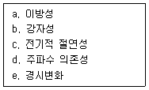
- a, d, e
- a, c, e
- b, c, d
- b, d, e
(정답률: 69%)
94. 생체재료 내부의 결정조직의 면간 거리응 구할 수 있기 때문에 결정 구조를 분석할 수 있는 방법은?
- 주사 전자현미경
- X-선 회절 분석법
- X-선 단층 촬영법
- X-선 에너지 분산 분석법
(정답률: 63%)
95. 응력-변위 곡선을 통해 얻을 수 있는 기계적 성질이 아닌 것은?
- 인성
- 항복강도
- 피로강도
- 탄성계수
(정답률: 67%)
96. 생체에서 발생하는 자장 강도 중 큰 순서부터 바르게 나열한 것은?
- 심장의 자장 > 폐l의 자장 > 뇌의 자장
- 뇌의 자장 > 심장의 자장 > 폐의 자장
- 폐의 자장 > 심장의 자장 > 뇌의 자장
- 심장의 자장 > 뇌의 자장 > 폐의 자장
(정답률: 67%)
97. 삼각나사의 골지름이 30mm이고, 바깥지름이 40mm일 떄 유효름(mm)은?
- 26
- 33
- 35
- 38
(정답률: 59%)
98. 혈류속도가 가장 빠른 혈관은?
- 정맥
- 대동맥
- 대정맥
- 모세관
(정답률: 81%)
99. 생체료로 만든 의료기기가 혈내에 들어왔을 때 가장 먼저 일어나는 현상은?
- 피브린 네트웍 형성
- 백혈구의 재료표면 부착
- 단백질의 변형 및 흡착
- 적혈구의 배료표면 부착
(정답률: 68%)
100. 성분해성 고분자인 폴리글리콜산(PGA)과 폴리락틱산(PLA)을 이용한 두 고분자의 대표적인 응용분야는?
- PGA : 흡수성 골고정판, PLA : 골고정 나사
- PGA : 흡수성 봉합사, PLA : 흡수성 골고정판
- PGA : 흡수성 골고정판, PLA : 흡수성 봉합사
- PGA : 골고정 나사, PLA : 흡수성 봉합사
(정답률: 66%)